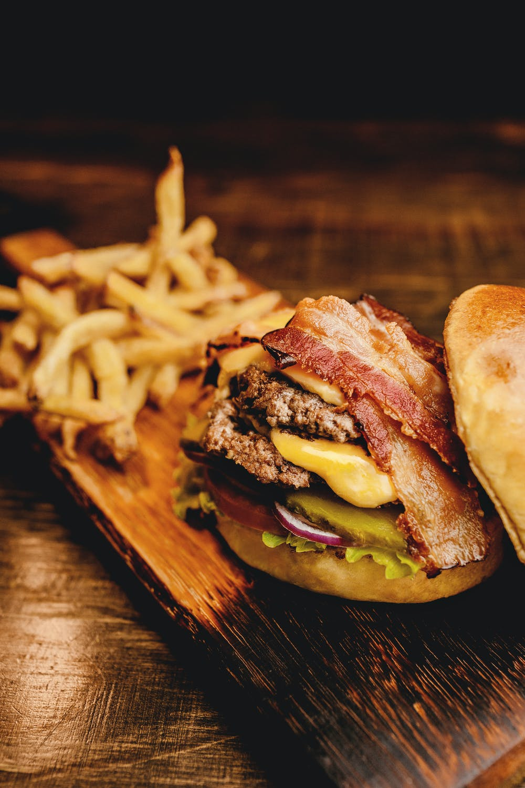
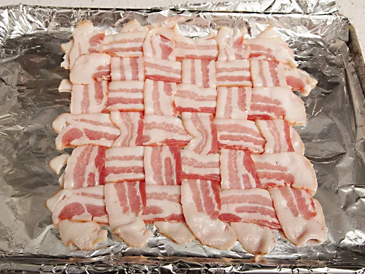
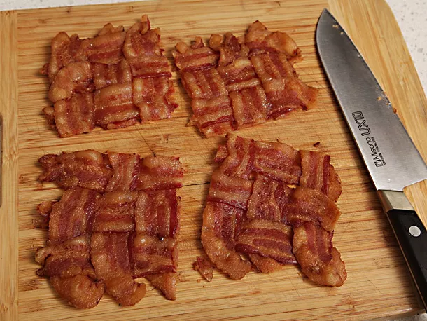

Homemade Gourmet Bacon Cheeseburger

Recipe from Serious Eats
Ingredients
- 12 slices thick-cut, naturally smoked bacon
- 6 tablespoons mayonnaise
- 1 tablespoon ketchup
- 1 tablespoon spicy brown or dijon mustard
- 2 tablespoons sweet pickle relish
- Freshly ground black pepper
- 24 ounces (1 1/2 pounds) freshly ground beef chuck
- Kosher salt
- 4 soft hamburger rolls
- 4 slices American or cheddar cheese
- 1 medium onion, finely sliced (about 3/4 cup)
- 12 dill pickle chips
Directions
- Adjust oven rack to center and bottom positions, place a 12-inch cast iron skillet on the bottom rack, and preheat oven to 400°F (200°C).
- Meanwhile, line a rimmed baking sheet with heavy duty aluminum foil. Place six slices of bacon on baking sheet side to side running perpendicular to the edge of the counter. Fold down the top halves of 1st, 3rd, and 5th slices. Place a slice of bacon across the top of the folds, running perpendicular to the first 6 slices, then unfold the bacon so that the new slice is woven over and under every other slice. Fold down the 2nd, 4th, and 6th slices and lay another slice of bacon across the top of the fold. Unfold the slices. Repeat until all 12 slices of bacon have been laid on the baking sheet in an interwoven pattern. Place baking sheet in oven and cook until bacon is crisp, about 25 minutes.

- While bacon cooks, combine mayonnaise, ketchup, mustard, relish, and 1 teaspoon black pepper in a medium bowl. Stir to combine. Form ground beef into 4 (6-ounce) patties slightly wider than the buns. Press the center of each patty to make a slight indentation with your fingertips. Season liberally with salt and pepper on all sides. Set aside.
- When bacon is cooked, remove baking sheet from oven and set broiler to high. Pour off excess bacon fat into a small bowl and set aside. Transfer bacon to a paper towel-lined plate, being careful not to break it. Allow to drain for 30 seconds, then transfer to cutting board. Cut the bacon weave into four smaller squares and set aside.

- Pour 2 tablespoons of rendered bacon fat into mayonnaise mixture and stir to combine. Brush hamburger rolls on inside surfaces with bacon fat and place on a broiler pan or baking sheet brushed-side up.
- Remove cast iron skillet from oven using oven mitts or a folded kitchen towel. Place over medium-high heat. Add remaining bacon fat to skillet. Add burger patties and cook, turning occasionally, until well-crusted and center of each burger registers 120°F on an instant read thermometer. Top with cheese and continue cooking until cheese is melted and burgers register 125°F for medium rare or 135°F for medium. Transfer to a large plate.
- Add onions to skillet and cook, stirring frequently, until softened and lightly browned, about 5 minutes. Season to taste with salt and pepper and transfer to a bowl.
- Place burger buns under broiler while onions cook and broil until golden brown and toasted, about 2 minutes.
- Spread mayonnaise mixture on both sides of burger buns. Place 3 pickles on each bottom bun. Top with a burger patty, a pile of onions, and a square of bacon weave. Close buns and serve.